Open File Dialogue Box in C#
<< Continues from the previous lesson
We'll now give users the option to add their own images to the picture box, instead of the one we chose. To do that, you need to display an Open File dialogue box when the user clicks your View > View Images menu item.
Dialogue boxes in C# can be added with the aid of an inbuilt object. Have a look in the Toolbox on the left hand side of Visual C#. There should be a category called Dialogs:
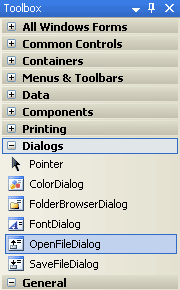
All the dialogue boxes you are familiar with in Windows are on the list above. The one highlighted is the one we want - OpenFileDialog. Double click this item, and you'll see a new item appear at the bottom of Visual C#, next to your menuStrip1 object:
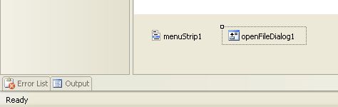
Nothing will appear on your form, however, because the Dialog controls are are hidden from view. The one in the image above has a default Name of openFileDialog1. This is a bit long, so have a look at the Properties Window on the right. Change the Name to openFD:
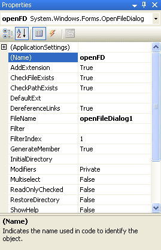
The control at the bottom of Visual C# should have changed, as well:
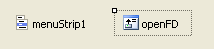
With the control selected, have another look at the Properties Window. You'll see that there are Properties for Filter, FileName, InitialDirectory and Title. We'll change these with code. But one important point to bear in mind about the Open File Dialogue box is this: They don't actually open files! What the Open File Dialogue box does, and the same is true for the other Dialog controls, is to allow you to select a file for opening. You have to write separate code to open anything. The only thing you're really doing here is to get at a file name.
We want the dialogue box to appear when the View > View Images menu is clicked. So double click this item on your View menu. A code stub will appear:
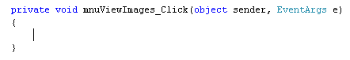
To see the Open Dialogue box, add this line to your code, in between the curly brackets:
openFD.ShowDialog();
So you type the Name of your control, and then a dot. After the dot, select ShowDialog from the IntelliSense list. As its name suggest, this shows you the dialogue box.
Run your programme and try it out. You should see something like the following appear when you click your View > View Images menu item:
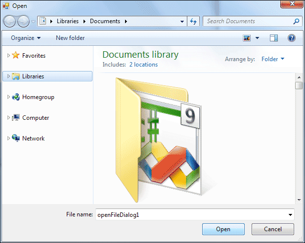
Because we haven't yet set any Properties, a default location is displayed, which is the Documents folder in Windows 7. The File name has the default openFileDialog1. You can change all these, though.
We can set a Title, first. The default Title is the word Open, in white on a blue background in XP, black on light blue background in Vista and Windows 7. Add this line to your code, before the first line:
openFD.Title = "Insert an Image";
This time, we're using the Title Property, and setting it to the text "Insert an Image". You can, of course, type anything you like here. When you run your programme and click the menu item, the new Title will look like this in XP:
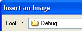
And this in later versions of Windows:
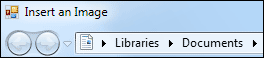
If you wanted something more humorous, you could even change it something like this:
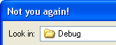
Better to stick with something more descriptive, though!
Another thing you can change is that Look in area. The default location is the Debug folder from your project. You can reset it with the InitialDirectory property. Add the following line to your code, before the other two lines:
openFD.InitialDirectory = "C:";
We're setting the default folder to be C. This would assume that the user had a hard drive called C. If you want to set the Initial Directory to the "My Documents" folder of any computer, try this after the equals sign, instead of "C:":
= System.Environment.GetFolderPath(Environment.SpecialFolder.Personal);
This will get the folder path to the My Document folder (Personal folder), which is called the Documents folder in Vista and Windows 7. You need to do it this way because different users will have different user names, and there's no way for you to tell beforehand.
But run your programme and try it out. The Look in box should have changed
(XP):
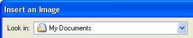
Or this, in later versions of the Windows operating system:
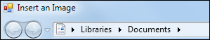
For the File name area, you can use the FileName Property. Add this line to your code (add it before the final line):
openFD.FileName = "";
Here, we're setting the File Name to a blank string. Run your programme and you'll find that the File name area on your dialogue box will be blank, and the cursor will be flashing away. Select any file you like, and the file name will appear in the box.
The next thing to do is to set up some Files of type. This is for the drop down list you see at the bottom, just under File name. Here's what we want to do (XP):
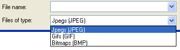
And this in later versions of Windows:
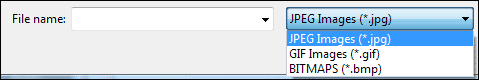
So we want the user to be able to select JPEG images, GIF images, and Bitmap images. When you set the files of type, you are restricting the type of files that the user can open. This is done with the Filter Property. After all, you don't want your users trying to insert text files into a picture box!
The filter property makes use of the pipe character ( | ). The pipe character can be found above the backslash on a UK keyboard. Add this code, just before the last line:
openFD.Filter = "JPEG|*.jpg";
Notice what comes after the equals sign:
"JPEG|*.jpg";
Your filters need to go between quote marks. But the JPEG part, before the pipe character, is what you want to display in the drop down list. You can have anything you like here, "JPEG Images" instead of just "JPEG", for example. After the pipe character, you need an asterisk symbol * followed by a dot. The asterisk symbol means "any file name". After the dot, you type the file extension that you want to filter for.
Run you code and try it out. You should see this in the "Files of type" list (on the right of the text box in Vista and Windows 7)::
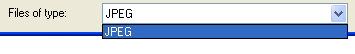
Now change your code to this:
openFD.Filter = "JPEG Images|*.jpg";
The "Files of type" list will then look like this, depending on your Operating System:
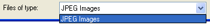
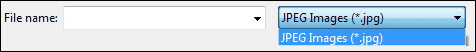
Using just one filter means that no other file types will display. To add other file types you just need to use the pipe character again. Let's add GIF images, as well. Change your code to this:
openFD.Filter = "JPEG Images|*.jpg|GIF Images|*.gif";
As you can see, the line is a bit messy! The new part is in blue, though. Notice that you separate one file type from another with a pipe character. But you also need a pipe to separate the text for the drop down list from the actual file type. To add Bitmap images, the code would be this:
openFD.Filter = "JPEG Images|*.jpg|GIF Images|*.gif|BITMAPS|*.bmp";
In the line above, the three file types have been displayed using different colours, so that you can see them better.
Here's a few more image types, and their file extensions:
TIFF Images: *.tif or *.tiff
PNG Images: *.png
PICT Images: *pct or *.pict
There are, of course, lots of others. In the image below, we've added TIFF files to the list. (Note that you can use upper or lower case for the extensions.):
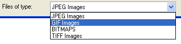
To display files of any type, use an asterisk symbol in place of the file extension. For example:
openFD.Filter = "JPEG Images|*.jpg|All Files|*.*";
However, we still haven't inserted a new image. To place a selected image into
the picture box, you have to get the file name that the user selected. You can
add a string variable to your code for this:
string Chosen_File = "";
You then access the FileName property of openFD. Like this:
Chosen_File = openFD.FileName;
The file name will then be in the variable we've called Chosen_File.
To place a new image into the picture box you have on the form, you need the Image property:
pictureBox1.Image
To place your chosen file into the Image property, you need this:
pictureBox1.Image = Image.FromFile(Chosen_File);
So after the equals sign, you can use the Image object. This has a method called FromFile( ). In between the round brackets of this method, you type the name of the image file. For us, this image file is stored in our Chosen_File variable.
Add the new lines to your code and your coding window should look something like ours below (we've cut down on a few filters):
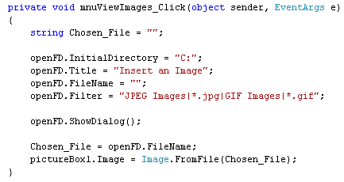
Run your programme and test it out. Select an image to open. You should find that your new image replaces the old one in your picture box.
However, there is a problem with the code. Instead of clicking Open, click Cancel. You should get an error message (C# 2012's error message is a plain version of the one below):
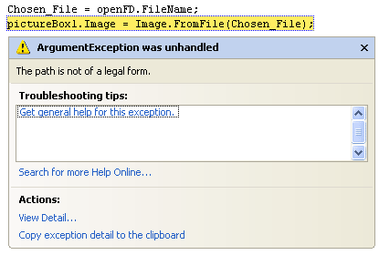
Because the Cancel button was clicked, there is no image name in the variable Chosen_File. So the programme "bugs out" on you. You need to handle this in your code.
To check if the cancel button was clicked, you can use this:
if (openFD.ShowDialog() = = DialogResult.Cancel)
{
MessageBox.Show("Operation Cancelled");
}
So there is inbuilt object called DialogResult. You check if this has a value of Cancel. Adding an else statement gives us this code:
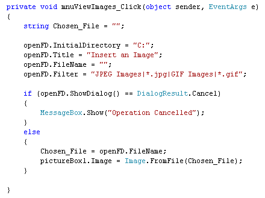
Change your code so that it looks like ours above. When you run your programme now, it shouldn't crash when you click the Cancel button.
You can also have this for you IF Statement, instead of the one above:
if (openFD.ShowDialog() != DialogResult.Cancel)
{
Chosen_File = openFD.FileName;
pictureBox1.Image = Image.FromFile(Chosen_File);
}
We've used the NOT symbol, here ( ! ). So we're checking if DialogResult does NOT equal Cancel.
In the next part, you'll see how to use the Open File Dialogue box to insert a text file into your text boxes.